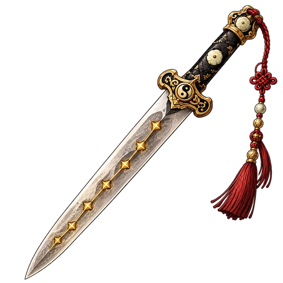
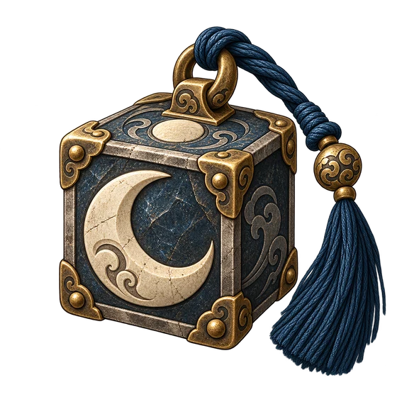
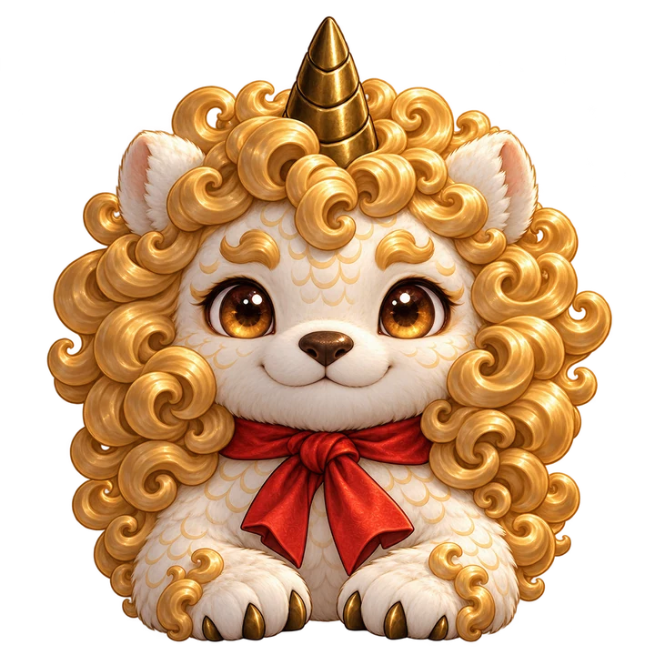
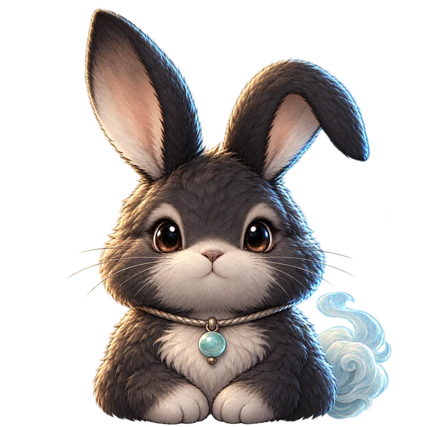
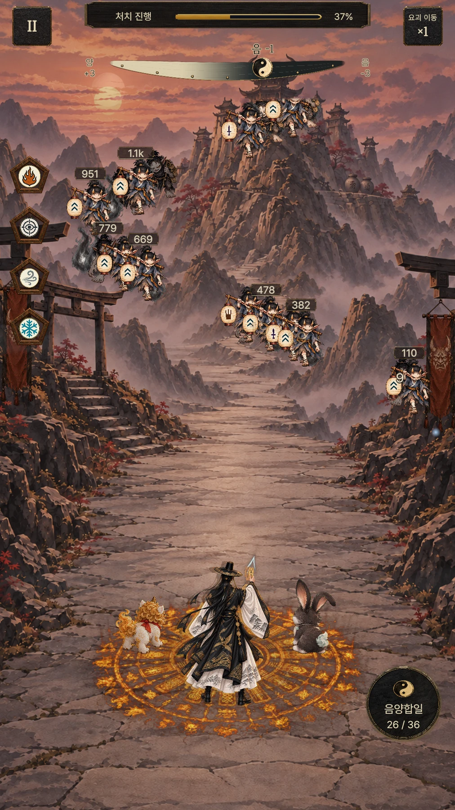
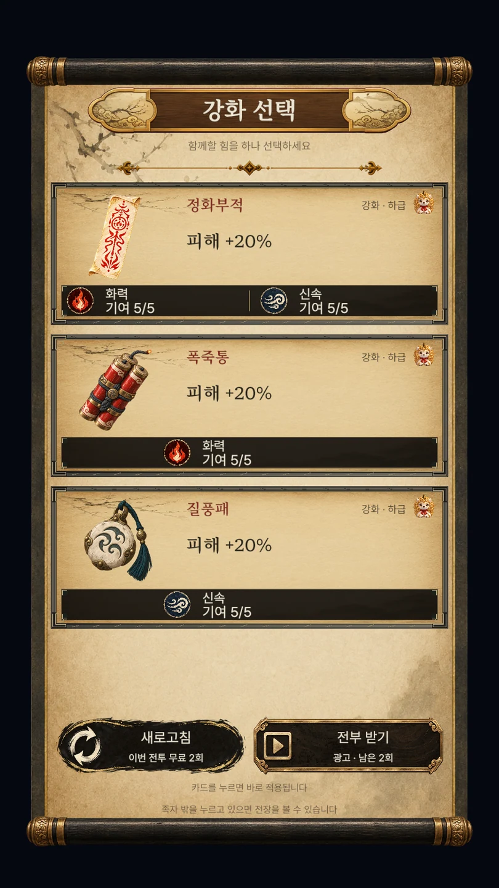
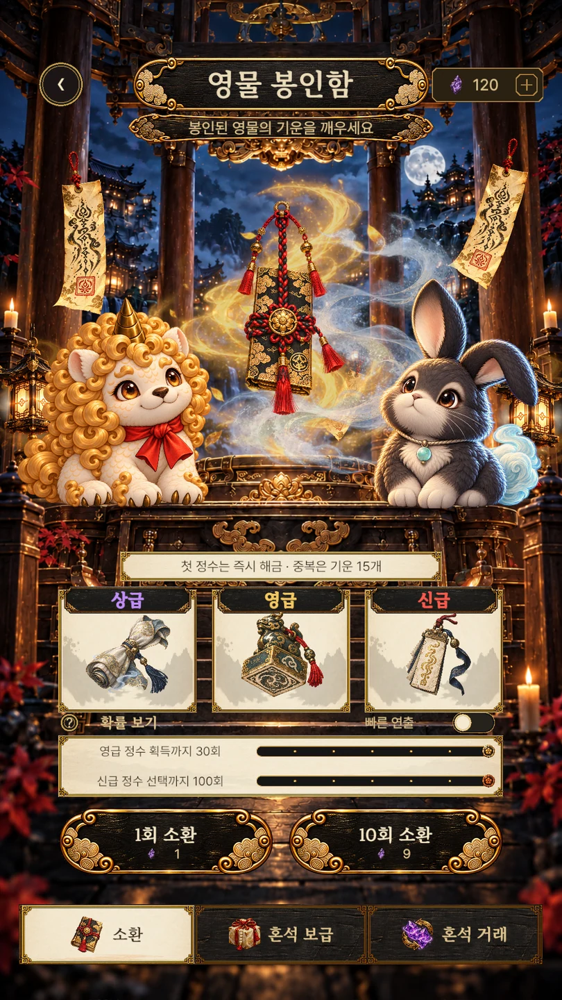
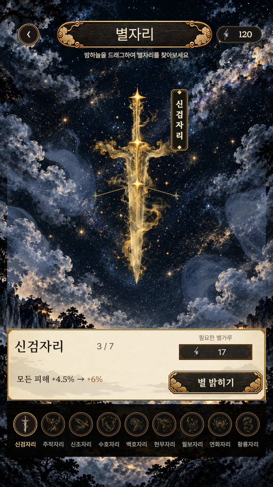
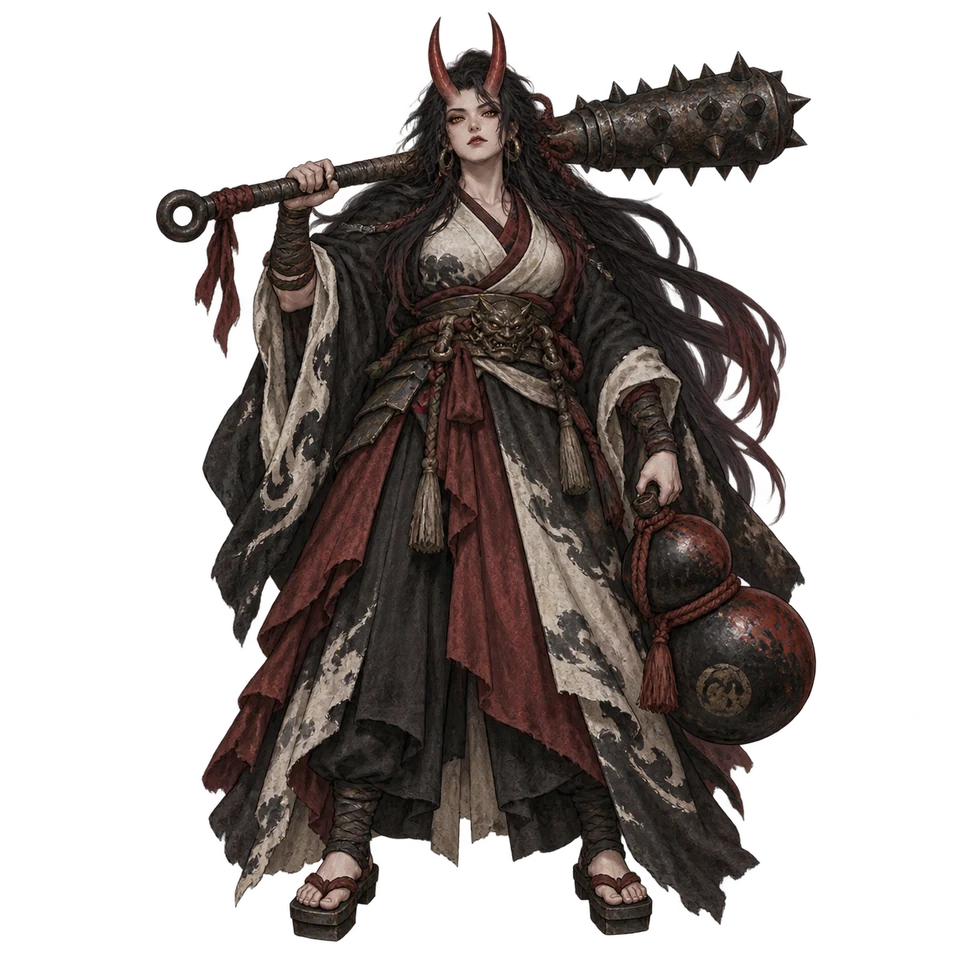

영물 조합
고르고, 엮고, 각성하다.
새로운 영물을 선택하고 시너지를 연결하세요.
조합에 따라 전투의 흐름이 달라집니다.
솔루나 : 백귀야행
어둠을 밝히는 부적 한 장.
해태와 달토끼, 그리고 당신의 선택으로
끝없이 밀려오는 백귀에 맞서세요.
한국 출시 준비 중 · ANDROID
01 — YOUR CHOICE, YOUR BATTLE
밀려오는 요괴, 서로 다른 영물의 힘.
매 순간의 선택을 쌓아
당신만의 돌파구를 만드세요.

영물 조합
새로운 영물을 선택하고 시너지를 연결하세요.
조합에 따라 전투의 흐름이 달라집니다.

음양의 선택
양의 힘으로 밀어붙일지, 음의 힘을 더할지.
선택한 방향이 영물의 전투를 바꿉니다.
이어지는 성장
영물을 강화하고 별자리의 힘을 깨우세요.
쌓아 올린 성장이 다음 도전의 힘이 됩니다.
02 — NEVER FACE THE NIGHT ALONE
햇살을 닮은 해태와 달빛을 품은 달토끼.
작고 든든한 두 신수가
당신의 백귀야행에 함께합니다.

THE LIGHT OF THE SUN
어둠 앞에서도 씩씩한, 햇살 같은 동행.

THE WHISPER OF THE MOON
깊은 밤을 비추는, 달빛 같은 동행.
전투 중 힘을 모아 음양합일을 발동하세요. 두 신수의 힘으로 전세를 뒤집으세요.
03 — INSIDE SOLUNA
전투부터 선택, 수집과 성장까지.
실제 게임 화면으로 만나보세요.

01 / BATTLE밀려오는 백귀에 맞서다
02 / CHOICE한 번의 선택, 새로운 전술
03 / COLLECTION새로운 힘과의 만남
04 / GROWTH별을 깨워 더 강하게게임 UI를 사용한 개발 화면입니다. 업데이트에 따라 실제 화면은 달라질 수 있습니다.
04 — AT THE END OF THE NIGHT
당신의 길을 가로막는 네 대마.
모든 선택을 걸고,
백귀야행의 주인과 마주하세요.

붉은 밤을 거느리는 오니의 왕.
거대한 방망이 아래, 첫 시련이 시작됩니다.
THE NIGHT CONTINUES
솔루나에 대한 궁금한 점과 소중한 의견을 들려주세요.
플레이 문의와 협업 제안을 기다립니다.